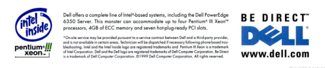

《战略十篇》的第八篇书稿，来自于Orit Gadiesh和James L. Gilbert，原文刊于《哈佛商业评论》2001年5月刊（链接）。
历史上最成功的航空公司之一，美国西南航空公司几十年来一直秉承一条经营信条「面对顾客短途出行需要，提供具有价格优势的服务」。这一信条精简、易于传播和执行，从始至终贯穿西南航空的经营，我们将此称之为「战略原则（Strategic Principles）」。
目的
需求端的快速变革几乎影响所有企业改变其供给模型——资源的配置、更加灵活的人才管理、去中心化的决策过程、内部沟通和协作的增多、多元化和生命周期更短的产品或服务。
在这个背景下，传统规划到执行的线性流程不再有效、而完全自组织的运作方式难以最优化资源和规模化，绝大部分企业都需要在管制和自治间找到平衡。一个有效的战略原则，正是在这个背景下帮助企业：
- 管理战略优先级；
- 为雇员创新背书；
- 抓住机会；
- 围绕客户需求变化进行产品或服务创新。
因此，战略原则是「行动导向（Action Oriented）」的，这和愿景（Mission Statement）不同，后者着重于对全体员工的激励作用，是情感化的，而前者则是全体员工在行动时最简单的指导原则。
比较愿景与战略原则，例如美国新任第45届总统特朗普响亮的「美国优先（America First）」，虽引起孤立主义的影子而广受批评，但也是战略原则的典型案例——一个具有操作性的行动指南，即在所有交易中将美国利益放在首位（而非美国的跨国公司）。其「让美国重新伟大（Make America Great Again）」，则是情绪化而鼓舞人心的愿景。
要素
一个战略原则，浓缩了企业战略的精华，除了明确企业要做什么，还有不该做什么。战略原则包含以下是三个要素：
- 在资源和需求间平衡；
- 衡量每个行动的战略意义；
- 设定自由创新的边界。
许多成功企业往往执着于长久以来建立的战略原则，让从基层到顶层设计的战略都符合战略原则的考验。例如戴尔长久以来的战略原则便是简单的「直接（Be Direct）」二字，从1997年起它也出现在几乎所有戴尔公司的广告上。

美国在线的战略原则是「无论何时何地，客户连接性第一（Consumer connectivity first - anytime, anywhere）」，这一清晰简单行动指南在1997年后帮助美国在线度过难关。
新环境下的重要性
去中心化、快速增长、科技发展、以及组织动荡使得企业自我更新的速度加剧，在这一背景下，战略原则的意义尤为重要。
企业去中心化，战略行动往往依赖于做前沿的员工完成，一线员工需要最基本和快速的决策工具；快速增长带来大量机会，战略原则帮助企业杜绝诱惑；科技发展往往难以预测，企业需要极强的决断力以抓住市场机会；而在这些背景下企业往往一直处于动荡期，这也是成长性企业必须经历的体验，那么在错综复杂的环境里，一个强有力、简单、直白、坚定的战略原则，帮助企业在动荡中游刃有余。
贝恩咨询（Bain & Company）四十多年来所坚持着自己的战略原则——「交付结果、而非报告（The product of a consultant should be results for clients - not reports）」。特别对咨询业这样特别依赖一线员工智慧的行业而言，这一原则从1970年代起，无论世事如何变化（包括高层改弦更张的震荡）鼓励一代又一代的贝恩咨询师涉及新的领域、开辟新的服务、拓展新的行业，这也彻底改变了咨询业的面貌，并一直延续至今。
战略原则的效用
理解战略原则的使用，必先理解战略原则在企业真实业务场景中如何发挥作用。
首先，战略原则在于权衡（Trade-Off）。美国西南航空至今仍是航空业中最成功的故事，25年持续盈利、1972年到1992年间股票210倍的增长，都是行业不可企及的高度。大部分公司就算能够实现高速增长，也大多遇到成长的阵痛，公司坚守的原则屡屡突破。而西南航空却并非如此，成功的秘诀在于其员工为了保护这其战略原则所做出的妥协。
这些妥协甚至包含退出高速增长的丹佛市场，因为丹佛机场所造成的延误使得消费者出行的成本变高，那么，西南航空所坚守的战略原则——「为消费者提供出行成本最具竞争力的方案」是否还能在达拉斯工作，答案是否定的。
其次，战略原则帮助发现创新机会，美国在线（AOL）把客户连接性放在首位，20多年前，AOL发现在特定时刻，客户对股票分析师在线上建立的财经信息公告板的流量增加，于是便提供服务帮助金融分析师建立自己的金融分析网站，最后成为了后来著名的金融信息类网站Motely Fool（fool.com）。同时，基于连接性这一原则，AOL鼓励一线员工发现更多的商业机会，最终转化为市场上的收购，快速布局。AOL与时代华纳的联合正是实践这一原则的最强音——通过整合时代华纳丰富的电视和闭路资源，真正实现了随时随地的内容访问。
建立战略原则
许多成熟的公司本身就建立在某个简单、独特、且清晰的战略原则之上，例如沃尔玛的「天天平价（Low prices, every day）」，这些公司的原则被自己、投资者、以及消费者广泛接受。但许多公司所面临的情况是全球化下的区域独立性，同时还需考虑这一原则必须区分于其他所有竞争者，因此，总结出一个使用全公司的战略原则相当不易。那么，该如建立战略原则？
独特性：资源和能力获得的成本在逐步降低、同质化也日趋严重，而现代企业中独特性的体现不在资源或能力，而在于用一种独特方式组织。而战略原则可以是对这种独特组织方式的解释；
沟通性：战略原则不是束之高阁的口号，而是能够深入企业一线员工的指导原则，测试其是否有效的方式，是当员工不知所措时，简单一句战略原则是否能够帮助员工做出当下最直接的决策；
推动性：战略原则鼓励和指导行动，它帮助一线员工对所面临的选择问最好的问题——这么做对战略原则有何帮助，或者不这么做是否对战略原则有损失；
延展性：请注意，战略原则是工具，它连接管理层和而不是企业安身立命的价值观，但也不能随时变更视若儿戏，在企业高层战略发生重大改变时，例如重要并购发生、上市等，管理层应根据当前情况适当扩充战略原则。
从战略到执行
所有战略咨询者都希望解决战略到执行间的问题，战略要么极为抽象——则基层员工无非与己无关、或有着无数自己的解释；要么事无巨细——则根本无法解释和指导现实情况，甚至根本难以达成一致。
我们今天将「扁平化」、或「去中心化」当作优秀企业特质，但事实上「员工自治」才是扁平和去中心的目的，缺少「自治」的「扁平化」，只是行政上刻意为之，实则一盘散沙、缺少执行力。而战略原则正是为「员工自治」存在，其最终想达到的是「塑造基层员工行为」，其核心逻辑是：
- 制定一个符合企业市场定位和战略规划的简单行为准则；
- 这个准则深入于一线员工中，用于第一线的决策、沟通、和妥协；
- 企业战略和员工自治达成统一。